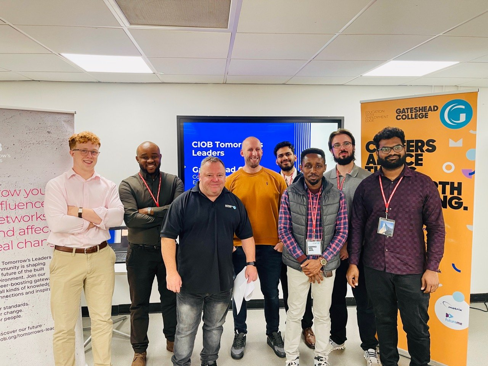
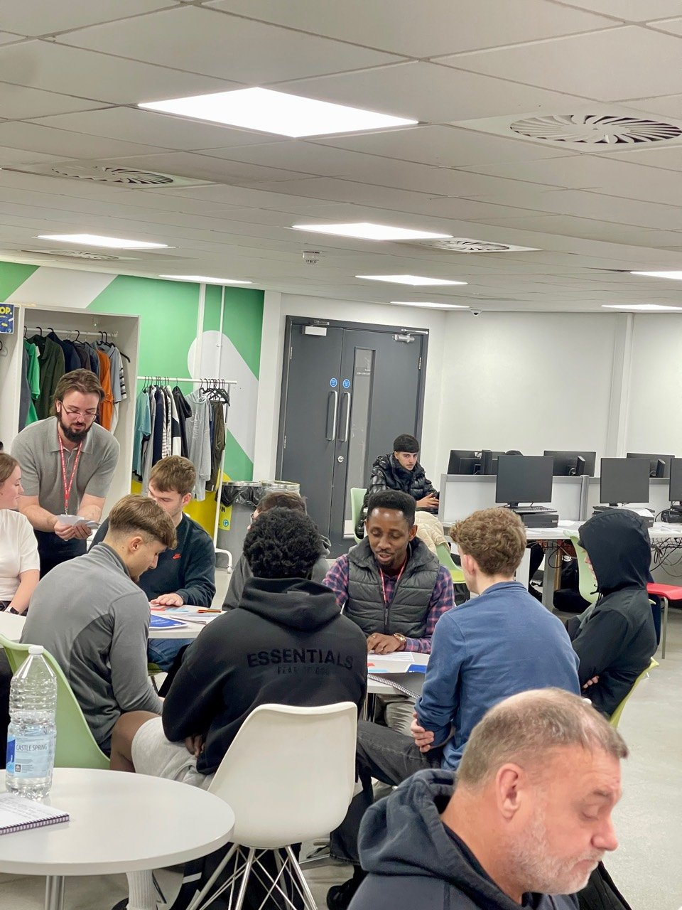
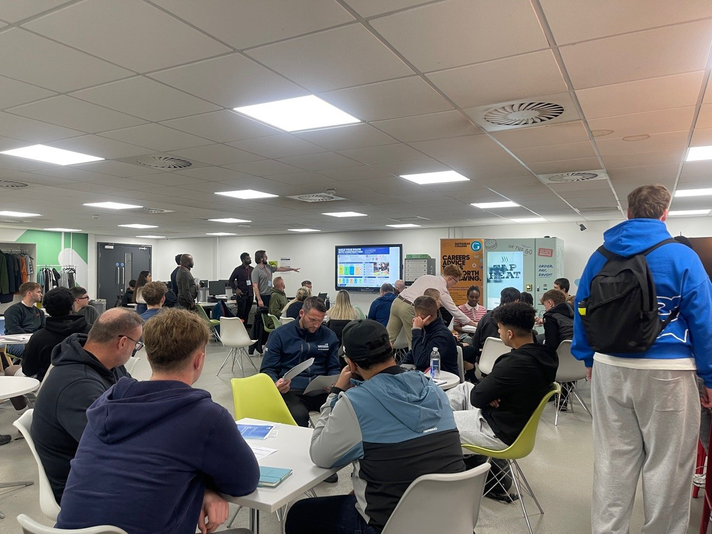
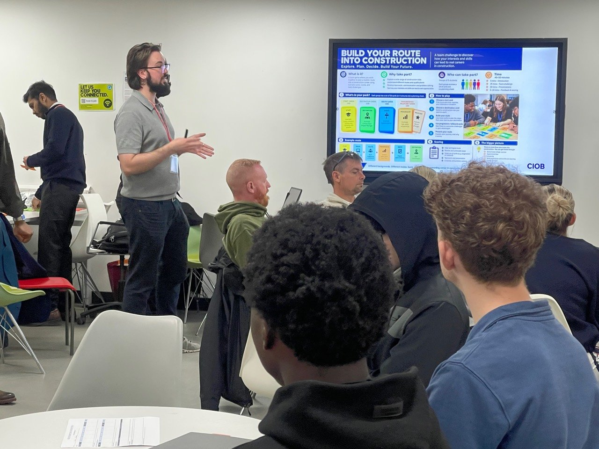
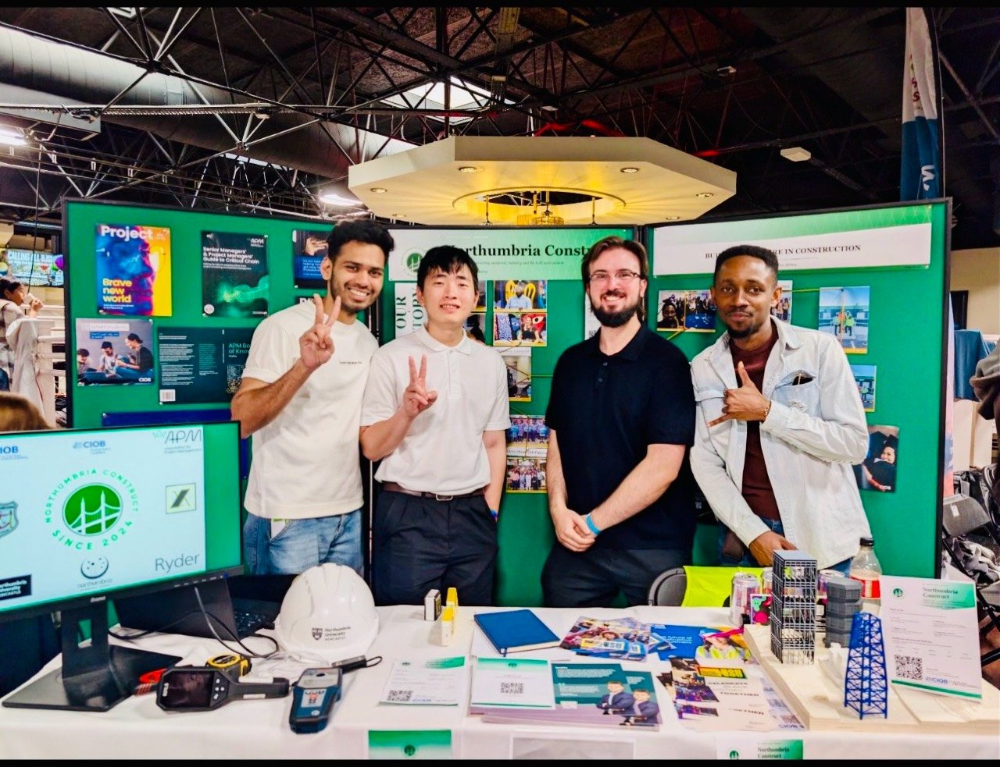
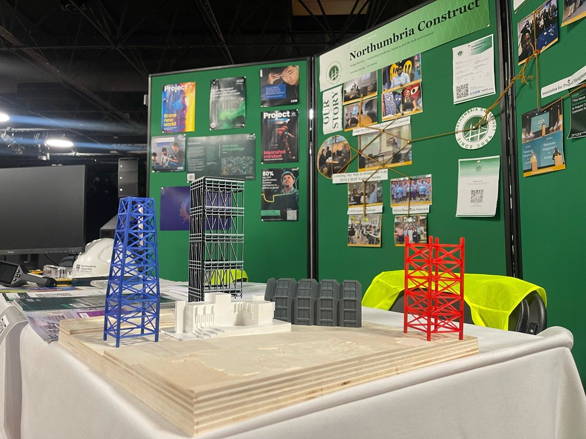
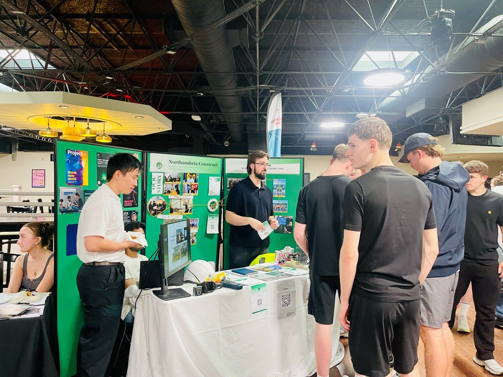
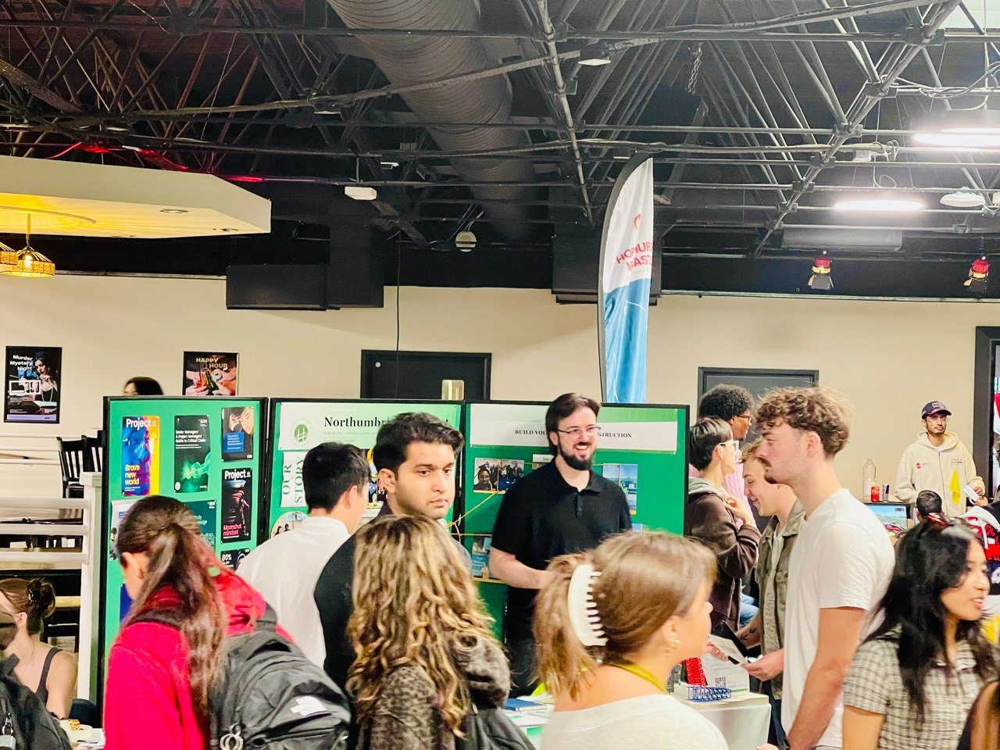

Discover the events, visits and professional engagements connecting our community with industry.
Activities · Newcastle Hub
Learning through professional engagement.
Activity · CIOB professional engagement
CIOB Site Visit — Eastern Green Link
Newcastle Hub · 2026 · Previous activity
Recommendations from the debate included clearer communication
around professional opportunities and better signposting for
site-visit participation. The subsequent CIOB Site Visit put
those recommendations into practice by connecting Northumbria
Construct participants with a live construction environment.
Facilitated through the Chartered Institute of Building, the
visit provided practical exposure to project delivery, site
operations and discussion with industry professionals.
Bridging industry and education at Gateshead College
· Gateshead College, UK · Completed
Northumbria Construct supported CIOB North East Tomorrow’s Leaders in delivering a Professional Engagement Day for approximately 40 college students, connecting them with industry professionals and university volunteers.
Careers brought to life
Using the CIOB Think Construction Toolkit, the team adapted Inspiring a Career in Construction and Construction Myths vs Facts into interactive presentations and discussions. Students explored the breadth of construction roles and routes through higher education, apprenticeships and practical experience.
The day piloted BRIC — Build Routes Into Construction with its intended audience. Students built and discussed credible career pathways; practical feedback highlighted opportunities to refine gameplay and simplify instructions.
Collaboration, creativity and teamwork
Working in eight teams, students took part in the Iconic Building Challenge using spaghetti and marshmallows. Creations included the Leaning Tower of Pasta and Marshmallows and St. Greggs Basilica. The exercise encouraged communication, problem-solving and teamwork while translating ideas into physical structures.

Industry participants and volunteers at Gateshead College

Exploring career pathways together

Collaborative learning at Gateshead College

Introducing the BRIC pilot
Volunteers making a difference
Northumbria Construct contributed to planning, volunteer mobilisation, stakeholder coordination and interactive activity delivery. Callum O’Connor led the volunteer team, alongside Vemula Sai Praneeth, Finn Mulholland, Aditya Shetty, Mayuri Shinde and Collins Tamunotonye.
We thank CIOB North East Tomorrow’s Leaders, Gateshead College, participating industry professionals and every volunteer. The event built on Bridge the Gap’s lessons about making professional networks, career information and participation more accessible.
Connecting students with industry at the 2026 Societies Fair
· Northumbria University, Newcastle upon Tyne · Completed
Northumbria Construct joined the Northumbria University Students’ Union Societies Fair, welcoming new and returning students from different disciplines to explore professional development, industry engagement and collaborative learning.
Committee members and volunteers discussed networking, volunteering, site visits, seminars and the value of joining professional communities while studying. Students were introduced to APM, CIOB and ICE; support from APM enabled the stand to offer student membership information and resources.

Representing Northumbria Construct at the Societies Fair

Hands-on displays and professional development resources

Introducing students to professional opportunities

Connecting with new and returning students
Continuing the Bridge the Gap mission
The fair sustained the founding project’s ambition to improve construction career awareness and strengthen student–industry engagement. We welcomed new members and students interested in contributing to projects, practical learning and professional networks.
Our thanks go to Callum O’Connor, Zaw Min Htet and Aditya Shetty for representing Northumbria Construct, and to Michelle Littlemore and Robin Carter-Evans for facilitating APM student membership resources. We thank Northumbria Students’ Union for organising the fair and every student who visited the stand.
· 11 am–1 pm · Domain Hall, Northumbria University Students’ Union
Northumbria Construct’s planned participation brings volunteers to a joint stand with the Association for Project Management (APM) and the Chartered Institute of Building (CIOB), connecting students with professional communities and development opportunities.
Visit the joint stand to meet volunteers and explore APM and CIOB professional development pathways.
Quayside Heritage Walk · planned for 16 October 2026
CIOB site visits
These visits are organised by CIOB North East in collaboration with Northumbria University as part of the Constructing the North East programme. Northumbria Construct shares the opportunities with its community; booking and attendance requirements are managed through the official CIOB listings.
Regent Farm First School
· Newcastle upon Tyne
Explore a school project using offsite construction and modern methods of construction.